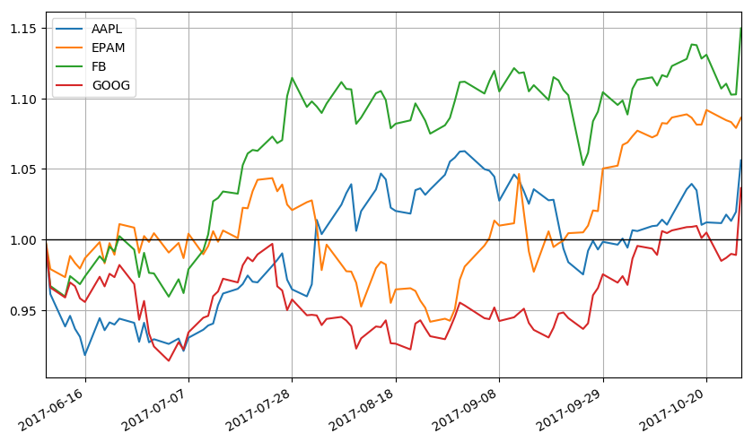
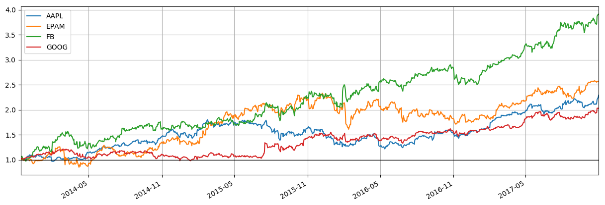
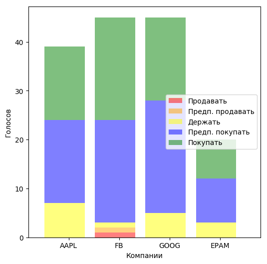
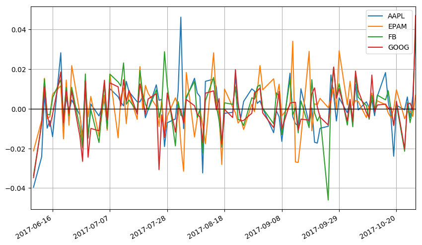

168.89
180.80
4.61
1.67
Декабрь

89.70
91.68
2.07
1.75
Декабрь

960.52
1,048.39
29.35
1.73
Декабрь

155.27
169.65
8.80
1.79
Сентябрь

Список компаний:
| Компания | Акция, min/max, $ | Измение стоим. | Доход, Прибыль, млн.$ | Рентабельность, EPS | Средняя рекомендация | След. выплата % (предв.) | Последняя новость | Динамика |
|---|---|---|---|---|---|---|---|---|
| 180.06 168.89 180.80 | +0.19 (+0.0011%) | 33,173.00 13,610.00 | 41.03 4.61 | Пр.покупать 1.67 | 1.70 Декабрь | Брокеры устанавливают Facebook, Inc. (FB). Целевая цена составляет $ 186,14 | | |
| EPAM | 91.15 89.70 91.68 | +0.03 (+0.0003%) | 1,285.44 111.93 | 8.71 2.07 | Пр.покупать 1.75 | 0.94 Декабрь | Обзор компании: сужение на акциях Epam Systems Inc (EPAM) | |
| 1,016.64 960.52 1,048.39 | -0.47 (-0.0005%) | 104,596.00 21,015.00 | 20.09 29.35 | Пр.покупать 1.73 | 9.93 Декабрь | Analyst Update для Alphabet Inc. (NASDAQ: GOOGL) | | |
| Apple | 169.04 155.27 169.65 | +2.32 (+0.0137%) | 223,507.00 46,651.00 | 20.87 8.80 | Пр.покупать 1.79 | 1.87 Сентябрь | Apple Inc. (AAPL) закрывается на 1,39% в день на 31 октября | |
Относительный рост акций, %%
Рентабельность вложений в акции (Стратегия 1): сколько $$ заработали с каждого вложенного $
Рекомендации аналитиков:
Пики колебаний акций, %%
